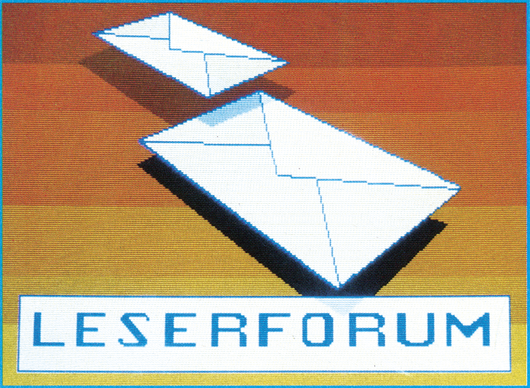

Woher bekommt man ein Copyright?
(1) An welche Ämter muß ich mich wenden, um mir ein Copyright auf ein Programm eintragen zu lassen?
(2) Was kostet eine solche Eintragung ungefähr?
(3) Wie lange gilt das Copyright?
Fragen zum C 16
(1) Läßt sich der Reset-Schalter des C 16 außer Betrieb setzen?
(2) Gibt es einen wirksamen Listschutz für den C 16?
Größere Hardcopy
Gibt es eine Möglichkeit, Bilder die mit dem Hardmaker (Ausgabe 4/86) aus Programmen herauskopiert worden sind, in einem größeren Format auf einem Seikosha-Drucker SP-1000 VC auszudrucken?
Olivetti-Disketten mit der 1571-Floppy lesen
Ich habe von einem Freund eine Diskette im Olivetti-Format bekommen. Wie kann ich den 1571-Diskcontroller so programmieren, daß ich das Olivetti-Format mit der 1571-Floppy lesen kann?
Videotext-Adapter für C 64
Für den Apple II gibt es meines Wissens einen Hardware-Zusatz, der die Übernahme von Teletex (Videotext)-Daten in den Computer ermöglicht. Gibt es sowas auch für den C 64? Wenn ja, von wem?
Modem mit FTZ-Nummer
Ich habe Ihren Artikel »Modem mit Wählautomatik« gelesen. Nun meine Frage: Warum bringt man keine Bauanleitung für ein Modem mit FTZ-Nummer?
Ein Selbstbau-Modem mit FTZ-Nummer wird es nie geben. Nur funktionsfähige Fertiggeräte können eine FTZ-Nummer erhalten. FTZ-Nummern gibt es für ganze Bauserien oder für Einzelgeräte. Haben Sie selbst ein Modem gebaut, können Sie eine Einzelzulassung beantragen. Bei der FTZ-Stelle in Darmstadt wird dann eine Einzelprüfung durchgeführt. Die Kosten dafür übersteigen aber den Modem-Preis um ein Vielfaches.
CP-80X und Vizawrite 64
Wer weiß, wie man Vizawrite 64 einstellen muß, um einen Drucker CP-80X richtig ansteuern zu können?
Philips-Farbmonitor CM 8533
Wie kommt es, daß der C 128 über den Philips-Monitor CM 8533 nur acht Farben darstellen kann?
Ausgabe 7/86
Zur Verbindung der genannten Geräte gehören die beiden Kabel SBC 1044, für den 40-Zeichen-Betrieb und SBC 1116 für den 80-Zeichen-Betrieb. Die beiden Kabel sollte es bei jedem Händler, der Philips-Monitore verkauft für zusammen etwa 50 Mark geben. Mit den Kabeln lassen sich auch 16 Farben darstellen. Es wird die RGB/TTL-Buchse des Monitors und nicht die Scart-Buchse verwendet.
CP/M-Programme vom Apple II auf den C 128?
Wie kann ich CP/M-Programme vom Apple II auf den Commodore 128 übertragen? Kann die 1571 auf dieses Programm programmiert werden, oder muß eine Hardware-Lösung her?
Ausgabe 7/86
Da eine Umstellung der 1571 auf das Apple-CP/M-Format nicht möglich ist, habe ich eine »Hardware-Lösung« entwickelt. Dieses Transfer-Set, bestehend aus einem Spezialkabel und Software, gestattet sowohl die Übertragung vom C 128 zum Apple, als auch umgekehrt. Das komplette Set (Kabel, zwei Disketten) kann bei mir für 85 Mark bezogen werden.
Computerversicherungen
Gibt es für Computer Versicherungen gegen Beschädigungen, Kurzschlüsse, Diebstahl etc.?
NTSC-C 64 und PAL-Fernseher
Ich habe mir vor kurzem einen C 64 äußerst billig von einem Amerikaner gekauft. Mir war klar, daß der C 64 mit der NTSC-Norm ausgestattet ist. Er funktioniert einwandfrei. Mein Farbfernseher liefert allerdings nur ein Schwarzweiß-Bild und keinen Ton. Kann man den C 64 umrüsten, und wenn ja, wie?
Das Problem, wie Sie richtig erkannt haben, liegt an dem Unterschied der beiden Fernsehnormen NTSC und PAL. Die PAL-Norm hat mehr Bildzeilen als die NTSC-Norm und ein anderes Farbträger-Verfahren. Um den C 64 auf die PAL-Norm umzurüsten, müßte mindestens der VIC-Chip und der Modulator ausgewechselt werden. Vielleicht hat ein Leser schon einmal einen NTSC-C 64 auf die PAL-Norm umgerüstet?
Laufwerks-Typen
(1) Hat die 1570-Floppy die Technik der 1541 oder 1571?
(2) Ist die 1570 genauso schnell wie die 1571?
(3) Gibt es schwerwiegende Unterschiede?
(4) Ist es möglich, den Farbmonitor des Schneider CPC 464 an den C 128 anzuschließen.
(1) Die 1570-Floppystation hat zwar die gleiche Platine wie die 1571, kann aber eine Diskette nicht beidseitig beschreiben, da sie nur einen Schreib-/Lesekopf hat. Die 1571 hat zwei solche Köpfe, einen für die Vorderseite und einen für die Rückseite. Eine mit der 1571-Floppystation im C 128-Modus formatierte Diskette hat 340 KByte Speicherplatz. Eine mit dem 1570-Laufwerk formatierte nur 170 KByte.
(2) Die 1570 ist genauso schnell wie die 1571.
(3) Ja, die 1571 kann nämlich, im Gegensatz zur 1570, Disketten beidseitig beschreiben. Achtung: Mit dem 1571-Laufwerk beidseitig beschriebene Disketten können nicht durch einfaches Umdrehen mit der 1570-Floppystation gelesen werden, da die Daten auf der Rückseite und Vorderseite in verschiedenen Drehrichtungen aufgezeichnet sind.
(4) Das haben wir noch nicht ausprobiert, vielleicht hat ein Leser eine Lösung.
Speichern, nur wann?
Wann kann ich beim Abtippen eines Programmes Teilspeicherungen vornehmen, hauptsächlich bei Maschinensprache-Programmen, aber auch bei Basic?
Ich habe keine Lust, ein Programm in einem »Rutsch« abzutippen.
Bei Basic-Programmen können Sie jederzeit eine Teilspeicherung, mit »SAVE "name", 8« vornehmen. Sollte bereits ein Programmteil unter dem selben Namen schon auf Diskette vorhanden sein, löschen Sie diesen mit dem Scratch-Befehl: OPEN 15,8,15,"S:name":CLOSE 15. Wenn Sie das Programm weiterbearbeiten wollen, brauchen Sie nur den bisher eingegebenen Teil mit »LOAD "name", 8« laden und den Rest eingeben.
Wenn Sie Maschinen-Programme aus dem 64'er-Magazin mit dem MSE eingeben, ist es genauso einfach. Laden und starten Sie den MSE und tippen Sie das Programm soweit ein, bis Sie keine Lust mehr haben. Markieren Sie sich dann im Listing die Stelle, an der Sie mit der Eingabe Schluß gemacht haben. Den eingegebenen Teil können Sie dann mit der Tastenkombination <CTRL-S> auf Diskette oder Kassette speichern.
Wenn Sie das Programm vervollständigen möchten, starten Sie den MSE, geben den Namen des Programms ein und beantworten die Frage nach der Startadresse mit <L> (<RETURN>-Taste nicht vergessen). Wenn der Ladevorgang beendet ist, können Sie über die Tastenkombination <CTRL-N> ab einer beliebigen Adresse mit der Eingabe fortfahren. Hier sollten Sie die Adresse eingeben, die der markierten folgt.
Sonderstellung des Kommas
(1) Warum kann ich in einem String kein Komma verwenden?
(2) Kann mein C 64 Schaden nehmen, wenn ich versuche, einige selbsterfundene POKEs einzugeben?
(3) Wo bekommt man das im Anleitungsbuch angebotene Programmierhandbuch?
(1) Wenn Sie mit INPUT einen String einlesen, sieht der C 64 das Komma als Trennungszeichen an. Dadurch können Sie mehrere Strings auf einmal einlesen (INPUT A$,B$). Wenn Sie vor und nach der Eingabe ein Anführungszeichen setzen, können Sie auch Kommata einlesen und den String mit Komma drucken. Sie können ihn aber nicht auf Diskette schreiben, und von dort lesen!
(2) POKEn Sie! Wenn Sie nichts am User-Port, oder am Expansion-Port angeschlossen haben, kann der C 64 bei einem »krummen« POKE zwar abstürzen, aber keinen Schaden nehmen. Killer-POKEs sind Gerüchte!
(3) Das Programmierhandbuch gibts in Buchläden und Computershops zu kaufen. Von Markt & Technik gibt es inzwischen die deutsche Übersetzung »Alles über den C 64«. Der Preis beträgt 59 Mark. ISBN 3-88090-379-7.
Speicherüberlauf und Garbage Collection
(1) Ich habe ein Programm geschrieben, das einen Kalender ausdruckt. Nach einer gewissen Laufzeit stoppt das Programm immer wieder mit der Fehlermeldung »OUT OF MEMORY«. Die Funktion FRE(0) liefert 32 KByte freien Speicherplatz.
(2) Wieviele Variablen dürfen maximal definiert werden?
(3) Kann man ein compiliertes Programm zurückübersetzen?
(4) Garbage Collection, aber wie?
(1) Wenn noch genügend Speicherplatz vorhanden ist und die Fehlermeldung »OUT OF MEMORY« erscheint, liegt das in der Regel an einem Stacküberlauf. Kann es sein, daß Sie eine FOR-NEXT-Schleife oder ein mit GOSUB aufgerufenes Unterprogramm mit IF-THEN oder GOTO verlassen? Wenn Sie das ein paarmal machen, läuft der Stack über.
(2) Das hängt ganz davon ab, was Sie den Variablen zuordnen und wie lang Ihr Programm ist. Wenn der RAM-Speicher nicht mehr reicht, bringt der C 64 die Fehlermeldung »OUT OF MEMORY«.
(3) Ja, mit einem Recompiler. Allerdings gibt es nur für die wenigsten Compiler ein solches Programm (für Austro-Compiler siehe Sonderheft 7/86). Das aus dem Compilat generierte Basic-Programm ist zudem alles andere als übersichtlich. Es ist wesentlich besser, sich das Source-Programm aufzuheben.
(4) Um die Carbage Collection brauchen Sie sich nicht zu kümmern, die macht der C 64 selbständig.
Sie merken das, wenn der Computer plötzlich längere Zeit auf nichts mehr reagiert. Besonders lange dauert die Garbage Collection (bis 20 Minuten), wenn Sie große String-Felder benutzen. Eine verbesserte Garbage Collection finden Sie im 64'er-Sonderheft 7/86. Diese Routine braucht für eine Garbage Collection höchstens eine Sekunde.
Probleme mit der INT-Funktion
Um die bei langen Rechnungen auftretenden Ungenauigkeiten in den Nachkommastellen wegzubekommen, verwende ich eine einfache Formel, die die INT-Funktion beinhaltet:
SV = INT(SV*10)/10
Es wird hier also eine Rundung auf eine Nachkommastelle durchgeführt, indem die Zahl zunächst mit 10 multipliziert wird, dann der ganzzahlige Anteil gebildet wird (INT) und die Zahl schließlich wieder durch 10 dividiert wird.
Bedauerlicherweise funktioniert ein mit dieser Routine ausgerüstetes größeres Programm nicht einwandfrei. Die manuelle Durchrechnung verschiedener Routinen brachte mich dann auf die Erkenntnis, daß die INT-Funktion bei bestimmten Nachkommawerten nicht einwandfrei funktioniert. Beispielsweise ergibt die oben angegebene Rundungs-Routine für die Zahl 13.9 das Ergebnis 13.8!
Was sind die Ursachen für dieses merkwürdige Verhalten, und wie kann man dem abhelfen?
Vorweg gesagt: Die INT-Funktion funktioniert einwandfrei, womit gesagt sein soll, daß sie alles macht, was man guten Gewissens von ihr verlangen kann.
Das auf den ersten Blick merkwürdige Ergebnis, daß die Zahl 13.9 (und andere) bei Rundung auf eine Nachkommastelle offenbar einen zu kleinen Wert (in diesem Falle 13.8) ergeben, ist eine direkte Folge der im Computer intern verwendeten binären Darstellung von Zahlenwerten. Der C 64 (wie auch die meisten anderen Computer) speichert eine Zahl wie beispielsweise 13.9 nicht als Folge von Dezimalziffern, sondern wandelt solche Zahlen in ein anderes Zahlenformat um. Dieses interne Zahlenformat basiert auf dem Dualsystem, daß heißt die Zahlen werden nicht zur Basis 10 wie im Dezimalsystem dargestellt, sondern zur Basis 2. Hinzu kommt, daß dabei nur mit einer begrenzten Genauigkeit gearbeitet wird. Es stehen also nicht beliebig viele binäre Nachkommastellen zur Verfügung, sondern nur eine begrenzte Zahl. Nun gibt es im Dezimalsystem gewisse Brüche, deren dezimale Darstellung eine nicht endende Ziffernfolge ist. Ein typisches Beispiel ist der Zahlenwert von 1/3. Wie drückt man 1/3 als Dezimalbruch aus? Nun, man könnte schreiben 0.33 oder 0.333 oder gar 0.3333 und dazu sagen, daß es sich um den ungefähren oder angenäherten Zahlenwert handelt. Dennoch, egal wie oft man hinter dem Komma die Ziffer 3 auch schreiben mag, immer ist der Zahlenwert nicht genau ein Drittel, wie man leicht sieht, wenn man den Dezimalbruch einfach einmal mit 3 multipliziert. Das Ergebnis von 1/3 mal 3 sollte Eins sein, aber 3 x 0.33 ergibt 0.99, 3 x 0.3333 ergibt 0.9999 und so weiter.
Was hat das mit dem Problem bei der Rundung auf dem C 64 zu tun? Sehr viel, denn wir sind direkt an der Ursache des Problems. Halten wir fest: Bei einem Computer, der direkt mit Dezimalziffern rechnet, ist der Zahlenwert 1/3 nicht genau darstellbar. Jede interne Repräsentation mit einer beschränkten Anzahl von Nachkommastellen ist notgedrungen mit einem gewissen Fehler behaftet.
Das gleiche Phänomen tritt auch bei der binären Darstellung von Zahlenwerten auf. Auch hier gibt es gewisse Brüche, die nicht exakt als binäre Ziffernfolge (aus den Zeichen »0« und »1«) dargestellt werden können. Ein solcher Bruch ist zum Beispiel der Zahlenwert von 9/10, der im Dezimalsystem leicht als 0.9 geschrieben werden kann, der aber im Dualsystem einem solchen endlosen Bruch entspricht. Der dezimale Zahlenwert 0.9 läßt sich also im Binärsystem nicht exakt darstellen, der Computer speichert einen geringfügig zu kleinen Wert. Nun merkt man in der Regel davon nichts, weil bei der Ausgabe mittels PRINT-Anweisung wieder eine Transformation aus dem binären ins dezimale Zahlenformat vorgenommen wird, wobei der etwas zu kleine Wert, der für 0.9 gespeichert ist, wieder zur Zahl 0.9 aufgerundet wird. Die Anweisung »PRINT 0.9*10« druckt daher wie erwartet den Wert Neun aus. Versuchen Sie es jetzt aber einmal mit »PRINT INT (0.9*10)«. Der Computer antwortet hier nicht mit 9, wie es zu erwarten wäre (denn 10 x 0,9 ist bekanntlich 9, und davon der ganzzahlige Anteil bleibt 9), sondern mit »8«! Die Erklärung ist einfach, wenn man weiß, daß 0.9 eben nicht als 0.9 im Computer steht, sondern als »etwas zu kleine« Annäherung an den tatsächlichen Zahlenwert. Das Ergebnis der Rechnung »10 x 0.9« ist daher ebenfalls »etwas zu klein« und nicht ganz genau 9, wie es sein sollte. Und hier kommt die INT-Funktion ins Spiel: INT schneidet alle Nachkommastellen ab, und zwar in der internen binären Darstellung der Zahl. INT angewendet auf eine Zahl, die etwas kleiner ist als 9, ergibt also 8 — ein ganz normaler Vorgang, der nur deshalb für Verwirrung sorgt, weil die interne Darstellung der Zahlen im Computer nicht sichtbar ist und weil wir Menschen nun einmal gewohnt sind, im Dezimalsystem zu rechnen.
Übrigens gibt es eine einfache Methode, derartige Fehler auszumerzen, nämlich die Verwendung einer verbesserten Rundungsmethode. Wenn man statt der oben verwendeten Formel mit
SV = INT(SV*10+0.5)/10
arbeitet, lassen sich Fehler der beschriebenen Art vermeiden. Bei dieser Formel wird vor der Anwendung der INT-Funktion noch 0.5 zur Zahl addiert. Dadurch wird eine sogenannte 4/5-Rundung realisiert, die bessere Ergebnisse liefert als INT alleine.